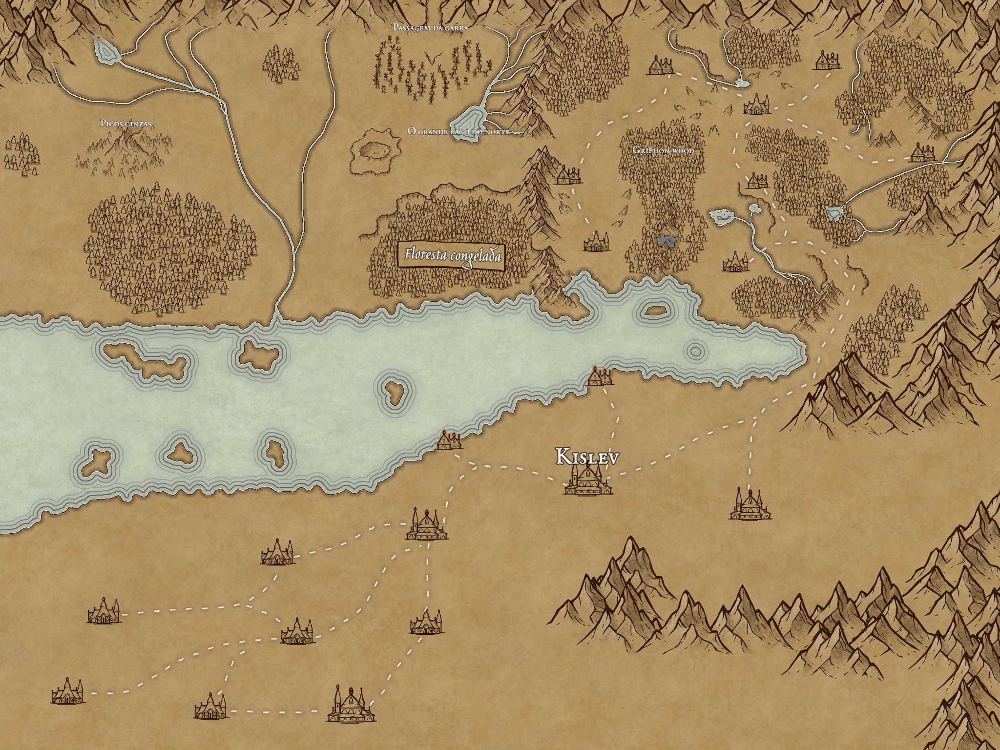
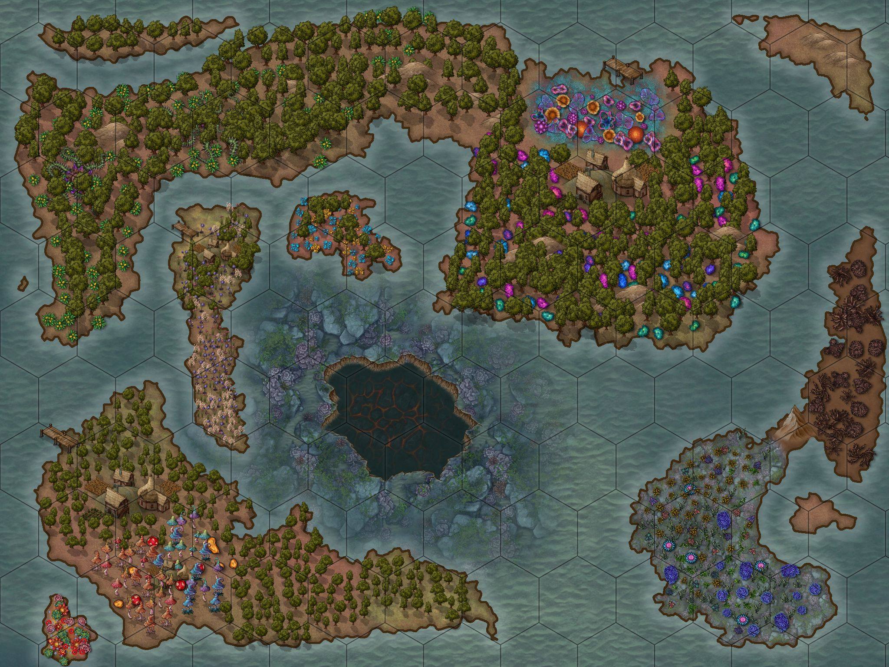
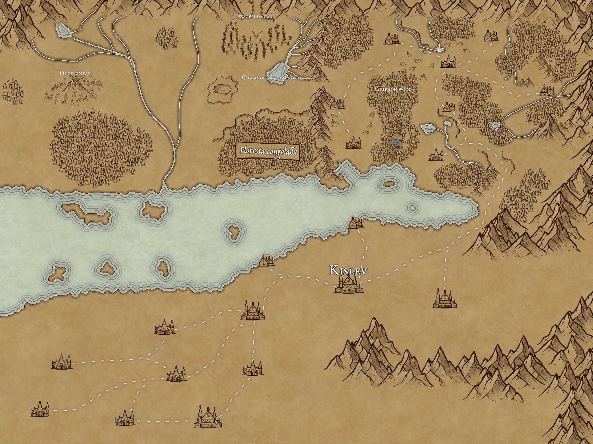
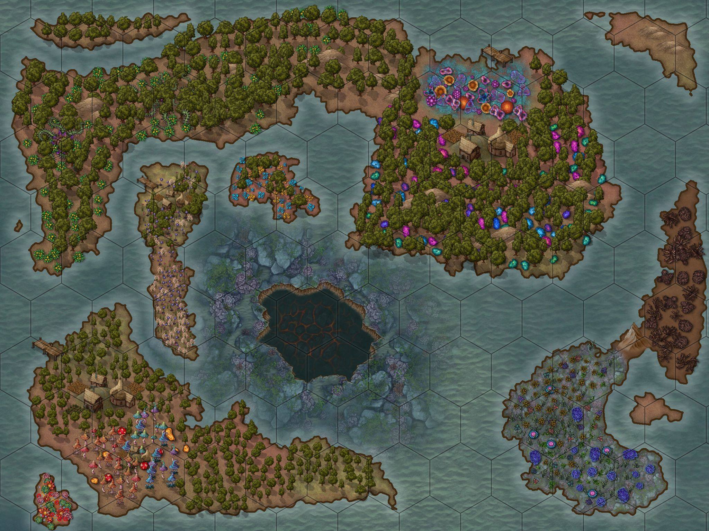

Gustavo H. P. Heinzen
Passado e presente
Eu vim de uma fazenda pequena e pobre no oeste do Paraná, perto da cidade de Salto do lontra, vim para Toledo com 9 anos e comecei a ajuda em uma pequena loja dos meus pais, desenvolvi um apego para tecnologia depois de um curso Programação da UTFPR quando eu estava no ensino médio, me mudei múltiplas vezes dentro de Toledo sempre ajudando com comercios da família. Entrei no curso de engenharia da computação pois achei que hardware e software eram a minha area, descobri que elétrica não é para mim, e em 2025 mudei para TSI para trabalhar durante o dia.
Hobby
Eu sou um fã medio de animes e filmes, sou um jogador afinco de jogos singleplayer mas o meu maior hobby sempre vai ser o RPG de mesa. Vindo do RPG de mesa, eu sou um mestre (narrador) a 6 anos, escritor de historias (para o RPG e simplesmente por escrever) desenhista de mapas e atualmente o editor de uma variante de um sistema nacional.
 



Musica
Eu sou do tipo que dirige, joga, trabalha, estuda e come com musica tocando, nao escuto quase nenhuma musica em portugues e nao tenho um preferencia muito grande por um genero, mas eu tenho alguns autores preferidos, e é sobre alguns deles o restante desse site.
Abaixo daqui segue uma pequena galeria de arte e links para musicas de alguns dos meu austores preferidos, nenhum dos trabalhos abaixo é de minha autoria, todo o credito das musicas e artes que foram modificadas para uso nessa galeria sao dos autores originais creditados em seus respectivos links.
Para navegar utilize a barra superior ou os botes ao final de cada seçao.